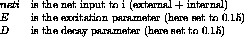

Next:
Extended Hierarchical Elman
Up:
Models of Partial
Previous:
Jordan Networks
Elman Networks

Figure:
Elman network
Literature: [
Elm90
]
Niels.Mache@informatik.uni-stuttgart.de
Tue Nov 28 10:30:44 MET 1995